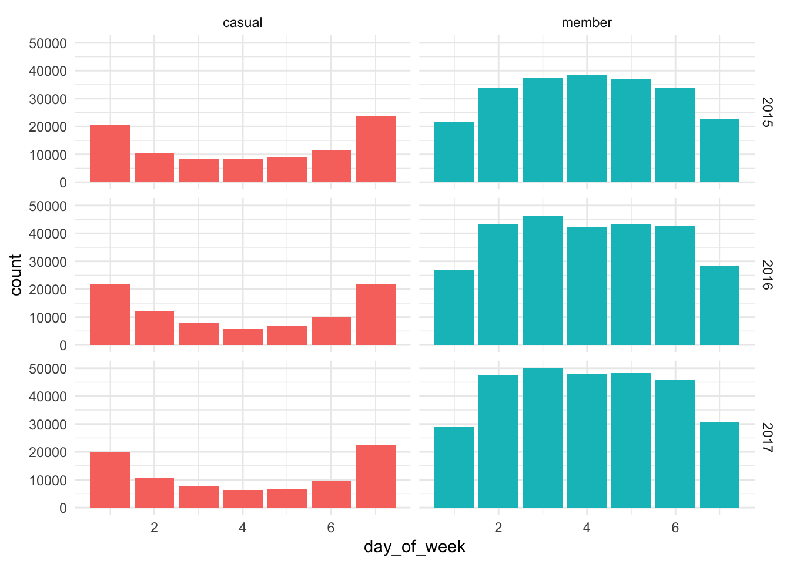
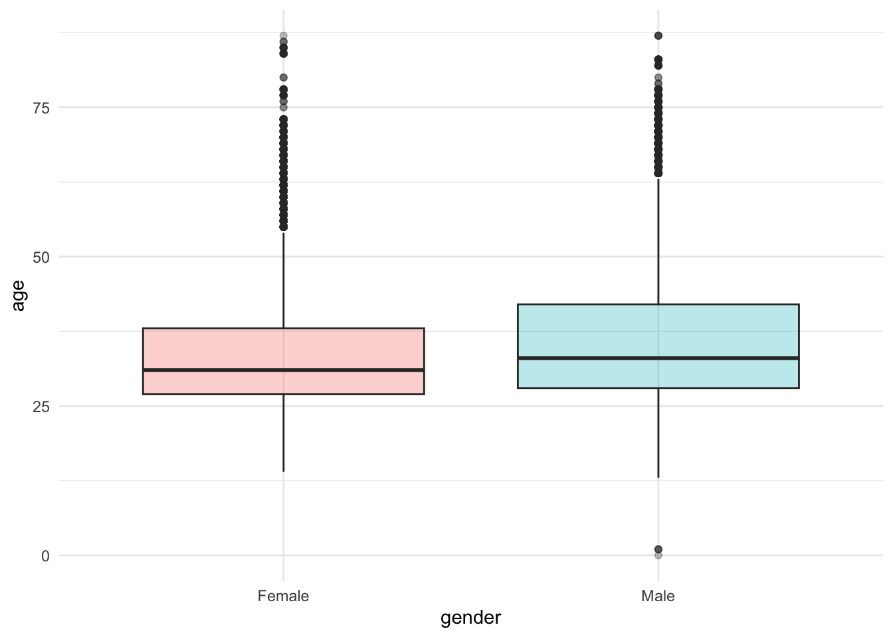
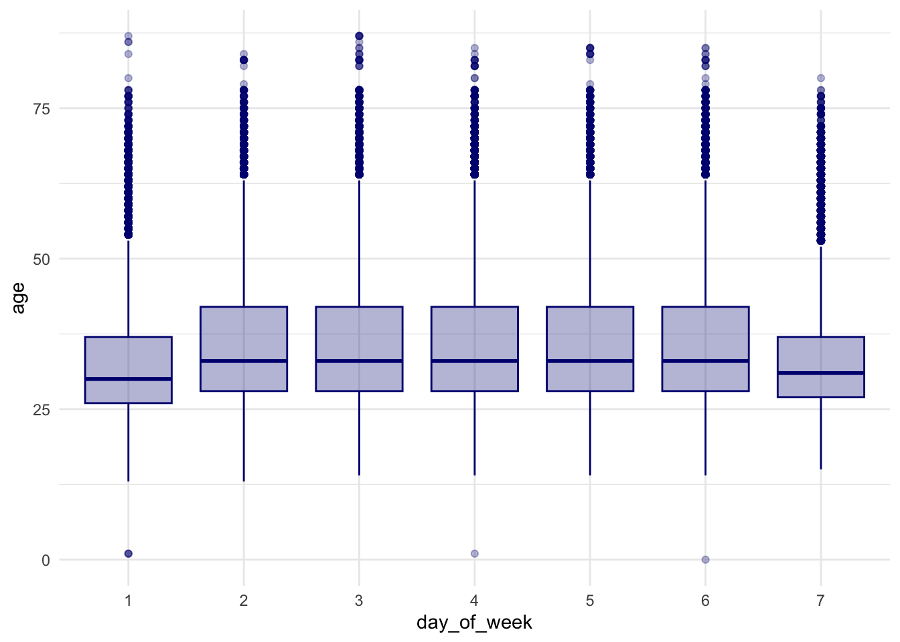

library(pacman)
pacman::p_load("tidyverse", "openxlsx", "flextable", "janitor", "patchwork", "readxl", "infer", "camcorder")Bike Project Documentation
ASK
Guiding questions:
What is the problem you are trying to solve?
A: To find out the key difference between annual members from casual users.
How can your insights drive business decisions?
A: It will help to find the key differentiations in order to get insights on how to mutate the casuals into annuals. Maybe it will be a simple matter.
Key tasks
1. Identify the business task
A: To figure out insights on how to convey casual users into annual members.
2. Consider key stakeholders
A: Moreno and Cyclistc Executive Team.
Deliverable
- A clear statement of the business task
A: Diferentiate casual from member riders.
PREPARE
Guiding questions
Where is your data located?
A: https://divvy-tripdata.s3.amazonaws.com/index.html The data has been made available by Motivate International Inc.
How is the data organized?
A: Within the above link, there are a lot of zip files. I notice some data was as a ride table monthly divided with names like: “YYYYMM-divvy-tripdata.zip” in which the table have an id from each ride, but few or none information on the users except their type. Continuing there are this another kind of name: “Divvy_Stations_Trips_YYYY_QXQZ.zip”, for the semester (two quarters), other with only quarters from 2018 to 2020 and finnaly the “Divvy_Stations_Trips_2013.zip” containing two tables: trips in 2013 and stations. Within this last file, there is a RESUME.txt file containing the following tables descriptions:
The tables:
**Metadata for Trips Table:
Variables:
- trip_id: ID attached to each trip taken
- starttime: day and time trip started, in CST
- stoptime: day and time trip ended, in CST
- bikeid: ID attached to each bike
- tripduration: time of trip in seconds
- from_station_name: name of station where trip originated
- to_station_name: name of station where trip terminated
- from_station_id: ID of station where trip originated
- to_station_id: ID of station where trip terminated usertype: “Customer” is a rider who purchased a 24-Hour Pass; “Subscriber” is a rider who purchased an Annual Membership
- gender: gender of rider
- birthyear: birth year of rider
Notes:
- First row contains column names
- Total records = 905,699
- Trips that did not include a start or end date were removed from original table.
- Gender and birthday are only available for Subscribers
Metadata for Stations table:
Variables:
- name: station name
- latitude: station latitude
- longitude: station longitude
- dpcapacity: number of total docks at each station as of 8/20/2014 online
- date: date the station went live in the system
I decided to import the most recent station table in the file “Divvy_Stations_2017_Q3Q4.csv” and the trips from 2015 to 2017 to keep in pace with the stations data.
To do so, I create a folder named “import” to gather all the files to be imported.
Are there issues with bias or credibility in this data? Does your data ROCCC? A: Yes, there are credibility and the ROCCC parameters are in compliance.
Reliable: The data source is not biased because is collected from the devices.
Original: The data was generated from a known source to this course.
Comprehensive: The data contains all elements to get to the solution.
Current: For the present purpose, the data is quite current.
Cited: The data is public under a public licence.
How are you addressing licensing, privacy, security, and accessibility?
A: No problem since, the data has only birthday information on the subjects. Overall it is a public database.
How did you verify the data’s integrity?
A: Just understanding it is collected from the devices and the integrity is preserved though cause there is no biased filtering for instance.
How does it help you answer your question?
A: Specially the trip table, will help to understand the patterns on the rider?
Are there any problems with the data?
A: Not so far until now.
PROCESS
What tools are you choosing and why?
A: I will use R with RStudio because there are a lot of data and the files from 2015 to 2017 results in a huge data base to be treated in worksheets.
Have you ensured your data’s integrity?
A: I notice there is now data able to identify users and the information collectors only exclude those not using the bikes. So, no bias at all.
What steps have you taken to ensure that your data is clean and ready to analyse?
A: The cleaning process described bellow.
Have you documented your cleaning process so you can review and share those results?
A: Yes.
Documentation on Cleaning Data
R Libraries to be used
Importing Data
Now, lets import the trip tables (from the import folder):
#Indicates the local machine path
path_trip <- "/Users/leandroalves/Library/CloudStorage/OneDrive-Personal/Documents/BINARIO/Pessoal/Leandro/1. stuff/Google Analytics/Course 08 - Capstone/bike/import"
#Reads all pattern like files at the path
arquivos_trip <- dir(path_trip, pattern = "^Divvy_Trips.*csv$")
#Uses purrr function to read_csv all files within the directory and convert it to tibble
trip_raw <- map_df(arquivos_trip, ~ read_csv(str_c(path_trip, "/", .x)) %>% mutate_all(as.character) %>% clean_names) %>% as_tibble()
#Glimpses the tibble.
glimpse(trip_raw)Rows: 10,607,836
Columns: 14
$ trip_id <chr> "6611093", "6611091", "6611090", "6611089", "6611088…
$ starttime <chr> "7/31/2015 23:59", "7/31/2015 23:59", "7/31/2015 23:…
$ stoptime <chr> "8/1/2015 0:03", "8/1/2015 0:22", "8/1/2015 0:18", "…
$ bikeid <chr> "4829", "3747", "1417", "3829", "3647", "199", "993"…
$ tripduration <chr> "197", "1378", "1178", "243", "2656", "1806", "747",…
$ from_station_id <chr> "239", "177", "403", "287", "305", "506", "301", "50…
$ from_station_name <chr> "Western Ave & Leland Ave", "Theater on the Lake", "…
$ to_station_id <chr> "242", "312", "150", "38", "506", "506", "24", "372"…
$ to_station_name <chr> "Damen Ave & Leland Ave", "Clarendon Ave & Gordon Te…
$ usertype <chr> "Subscriber", "Subscriber", "Customer", "Subscriber"…
$ gender <chr> "Male", "Male", NA, "Male", NA, "Female", "Male", "F…
$ birthyear <chr> "1978", "1980", NA, "1987", NA, "1985", "1985", "198…
$ start_time <chr> NA, NA, NA, NA, NA, NA, NA, NA, NA, NA, NA, NA, NA, …
$ end_time <chr> NA, NA, NA, NA, NA, NA, NA, NA, NA, NA, NA, NA, NA, …Cleanning Data
There are four candidate variables for date type: starttime, stoptime, start_time and end_time. First it is important to investigate the date formats available in the files in order to reduce inconsistency.
trip_raw %>%
mutate(digst = str_length(starttime)) %>%
group_by(digst) %>%
arrange(digst) %>%
slice(1) %>%
select(digst, starttime)# A tibble: 8 × 2
# Groups: digst [8]
digst starttime
<int> <chr>
1 13 7/9/2015 9:59
2 14 7/31/2015 9:59
3 15 7/31/2015 23:59
4 16 12/31/2015 23:48
5 17 9/9/2016 23:57:18
6 18 9/30/2016 23:59:58
7 19 12/31/2016 23:57:52
8 NA <NA> Here, it can be seen it has the data format as month, day and year, but the hourly format sometimes has seconds and others do not. In this case, each date column will be separated so it can rightly be converted later to adjust the feature data type. To begin with, it was separated the days from the hourly parts, processed each individually and finally got back together with the make_datetime() function from lubridate package.
Also, it is important to notice the whole database contains 10.607.836 observations and this can demand extra processing time without necessity. So I decide to use the dplyr R package slice_sample() function to adequately crop the table in 10% of its total.
As a further step, all the left over character variables will be casted to factor for analyses phase.
(
trip <-
trip_raw %>%
slice_sample(prop = prop) %>%
separate(starttime, sep = " ", into = c("starttime_day", "starttime_t")) %>%
separate(stoptime, sep = " ", into = c("stoptime_day", "stoptime_t")) %>%
separate(start_time, sep = " ", into = c("start_time_day", "start_time_t")) %>%
separate(end_time, sep = " ", into = c("end_time_day", "end_time_t")) %>%
mutate(day_started_at = if_else(!is.na(starttime_day), starttime_day, start_time_day),
day_ended_at = if_else(!is.na(stoptime_day), stoptime_day, end_time_day),
time_started_at = if_else(!is.na(starttime_t), starttime_t, start_time_t),
time_ended_at = if_else(!is.na(stoptime_t), stoptime_t, end_time_t)) %>%
select(-ends_with("_t"), -ends_with("_day")) %>%
mutate(across(c(tripduration, birthyear), as.numeric)) %>%
mutate(across(starts_with("time"), ~ if_else(str_length(.x) <= 5, hm(.x), hms(.x)))) %>%
mutate(across(starts_with("day"), mdy)) %>%
mutate(across(where(is.character), as.factor)) %>%
mutate(
started_at = make_datetime(
year(day_started_at),
month(day_started_at),
day(day_started_at),
hour(time_started_at),
minute(time_started_at),
second(time_started_at)
),
ended_at = make_datetime(
year(day_ended_at),
month(day_ended_at),
day(day_ended_at),
hour(time_ended_at),
minute(time_ended_at),
second(time_ended_at)
)
) %>%
select(-starts_with("day"), -starts_with("time"))
)# A tibble: 1,060,783 × 12
trip_id bikeid tripduration from_station_id from_station_name to_station_id
<fct> <fct> <dbl> <fct> <fct> <fct>
1 5038738 1701 277 344 Ravenswood Ave & … 316
2 9178943 4668 980 85 Michigan Ave & Oa… 157
3 16785335 4827 802 322 Kimbark Ave & 53r… 426
4 14106159 2885 620 106 State St & Pearso… 28
5 16733949 1925 872 117 Wilton Ave & Belm… 117
6 9472919 1709 1545 85 Michigan Ave & Oa… 329
7 16881351 5513 1431 159 Claremont Ave & H… 188
8 10629233 5723 1154 35 Streeter Dr & Gra… 3
9 6831423 1619 1662 334 Lake Shore Dr & B… 35
10 16810249 5465 954 27 Larrabee St & Nor… 91
# ℹ 1,060,773 more rows
# ℹ 6 more variables: to_station_name <fct>, usertype <fct>, gender <fct>,
# birthyear <dbl>, started_at <dttm>, ended_at <dttm>Now using the skim() function from skimr package to really understand the data and see what is missing.
skimr::skim(trip)| Name | trip |
| Number of rows | 1060783 |
| Number of columns | 12 |
| _______________________ | |
| Column type frequency: | |
| factor | 8 |
| numeric | 2 |
| POSIXct | 2 |
| ________________________ | |
| Group variables | None |
Variable type: factor
| skim_variable | n_missing | complete_rate | ordered | n_unique | top_counts |
|---|---|---|---|---|---|
| trip_id | 0 | 1.00 | FALSE | 1060782 | 110: 2, 100: 1, 100: 1, 100: 1 |
| bikeid | 0 | 1.00 | FALSE | 6356 | 331: 319, 312: 309, 872: 309, 474: 304 |
| from_station_id | 0 | 1.00 | FALSE | 584 | 35: 25496, 76: 15370, 177: 13899, 91: 13749 |
| from_station_name | 0 | 1.00 | FALSE | 638 | Str: 18777, Lak: 15370, The: 13899, Cli: 13749 |
| to_station_id | 0 | 1.00 | FALSE | 585 | 35: 28311, 268: 14938, 177: 14709, 76: 14611 |
| to_station_name | 0 | 1.00 | FALSE | 640 | Str: 20478, Lak: 14938, The: 14709, Lak: 14611 |
| usertype | 0 | 1.00 | FALSE | 3 | Sub: 797997, Cus: 262769, Dep: 17 |
| gender | 262769 | 0.75 | FALSE | 2 | Mal: 597436, Fem: 200578 |
Variable type: numeric
| skim_variable | n_missing | complete_rate | mean | sd | p0 | p25 | p50 | p75 | p100 | hist |
|---|---|---|---|---|---|---|---|---|---|---|
| tripduration | 0 | 1.00 | 990.94 | 1829.87 | 60 | 409 | 704 | 1178 | 86362 | ▇▁▁▁▁ |
| birthyear | 262718 | 0.75 | 1980.67 | 10.77 | 1899 | 1975 | 1984 | 1989 | 2017 | ▁▁▂▇▁ |
Variable type: POSIXct
| skim_variable | n_missing | complete_rate | min | max | median | n_unique |
|---|---|---|---|---|---|---|
| started_at | 0 | 1 | 2015-01-01 00:47:00 | 2017-12-31 22:05:00 | 2016-08-09 08:40:56 | 826417 |
| ended_at | 0 | 1 | 2015-01-01 01:00:00 | 2017-12-31 22:12:00 | 2016-08-09 08:52:33 | 824272 |
Transforming the Data
Checking for consistency in tripduration feature because it showed some ultrahigh values as 239.8944444 hours and it seemed like an error or an outlier. To do so, lets ad a new calculated feature ride_length and see if both are align.
trip_with_ridelength <-
trip %>%
mutate(ride_length = as.numeric(difftime(ended_at, started_at, units = "secs")),
difference = tripduration-ride_length) %>%
select(tripduration, ride_length, difference, everything()) # organizing fields to investigate the differenceThe calculated diference ride_length showed some negative values to be investigated and also showed the highvalues were correct. Let’s dig in a little further in the negative values.
trip_with_ridelength %>%
filter(ride_length <= 0) %>%
left_join(trip_raw %>% select(trip_id, starttime, stoptime, start_time, end_time), by = "trip_id") %>%
select(tripduration, ride_length, difference, started_at, ended_at, starttime, stoptime, start_time, end_time) # A tibble: 1 × 9
tripduration ride_length difference started_at ended_at
<dbl> <dbl> <dbl> <dttm> <dttm>
1 1699 -1860 3559 2017-11-05 01:58:00 2017-11-05 01:27:00
# ℹ 4 more variables: starttime <chr>, stoptime <chr>, start_time <chr>,
# end_time <chr>By this last, it can be seen there are inconsistencies, but for very few registers. Maybe because the actual device clocks where not synchronized. In any case, for the final transformation these values will be filtered out.
Creating column day_of_week, yr for year and mth for month in trip table. Also, it will be added a column with the age of the member subtracting the birthyear from yr.
Another step is to convert the user type designations to “members” and “casual” as the maketing team named them. But, first, let’s see how many different usertypes and how many registers from each to be treated.
trip %>%
count(usertype)# A tibble: 3 × 2
usertype n
<fct> <int>
1 Customer 262769
2 Dependent 17
3 Subscriber 797997From here, it showed three types, and the “Dependent” was not mentioned even in the description files. Let’s see if they have the members atributes as birthyear and gender.
trip %>%
filter(usertype == "Dependent") %>%
select(usertype, birthyear, gender, everything()) %>%
filter(is.na(birthyear) | is.na(gender))# A tibble: 1 × 12
usertype birthyear gender trip_id bikeid tripduration from_station_id
<fct> <dbl> <fct> <fct> <fct> <dbl> <fct>
1 Dependent 1973 <NA> 15776123 3570 893 327
# ℹ 5 more variables: from_station_name <fct>, to_station_id <fct>,
# to_station_name <fct>, started_at <dttm>, ended_at <dttm>As it can be seen, only few or none registers have no gender, maybe some typos, but for consistency this record will be dropped (by filter). For the rest, the “Dependent” user is a “member”.
(
trip_transformed <-
trip_with_ridelength %>%
filter(ride_length > 0) %>% # removing inconsistent ride_length
select(-difference) %>% # removing the difference auxiliar field
mutate(day_of_week = wday(started_at, week_start = 7, label = FALSE),
yr = year(started_at),
mth = month(started_at),
age = yr - birthyear,
usertype = if_else(usertype == "Customer", "casual", "member")) %>%
filter(!(usertype == "member" & (is.na(birthyear) | is.na(gender)))) %>%
select(ends_with("at"), day_of_week, everything())
)# A tibble: 1,060,626 × 17
started_at ended_at day_of_week tripduration ride_length
<dttm> <dttm> <dbl> <dbl> <dbl>
1 2015-05-03 12:34:00 2015-05-03 12:39:00 1 277 300
2 2016-04-14 16:30:00 2016-04-14 16:46:00 5 980 960
3 2017-10-04 01:36:00 2017-10-04 01:49:00 4 802 780
4 2017-05-21 19:16:52 2017-05-21 19:27:12 1 620 620
5 2017-09-30 23:25:10 2017-09-30 23:39:42 7 872 872
6 2016-05-08 15:40:00 2016-05-08 16:06:00 1 1545 1560
7 2017-10-09 17:40:00 2017-10-09 18:04:00 2 1431 1440
8 2016-07-10 17:17:08 2016-07-10 17:36:21 1 1154 1153
9 2015-08-11 12:44:00 2015-08-11 13:12:00 3 1662 1680
10 2017-10-05 12:15:00 2017-10-05 12:31:00 5 954 960
# ℹ 1,060,616 more rows
# ℹ 12 more variables: trip_id <fct>, bikeid <fct>, from_station_id <fct>,
# from_station_name <fct>, to_station_id <fct>, to_station_name <fct>,
# usertype <chr>, gender <fct>, birthyear <dbl>, yr <dbl>, mth <dbl>,
# age <dbl>Summary
All the transformation and cleaning process is documented above. Nonetheless it was used 10% sample to do the exercise regarding it would not matter for the final results.
ANALYSE
Let’s now perform an exploratory data analyses in order to answer the main question of the difference between members and casual users.
skimr::skim(trip_transformed)| Name | trip_transformed |
| Number of rows | 1060626 |
| Number of columns | 17 |
| _______________________ | |
| Column type frequency: | |
| character | 1 |
| factor | 7 |
| numeric | 7 |
| POSIXct | 2 |
| ________________________ | |
| Group variables | None |
Variable type: character
| skim_variable | n_missing | complete_rate | min | max | empty | n_unique | whitespace |
|---|---|---|---|---|---|---|---|
| usertype | 0 | 1 | 6 | 6 | 0 | 2 | 0 |
Variable type: factor
| skim_variable | n_missing | complete_rate | ordered | n_unique | top_counts |
|---|---|---|---|---|---|
| trip_id | 0 | 1.00 | FALSE | 1060625 | 110: 2, 100: 1, 100: 1, 100: 1 |
| bikeid | 0 | 1.00 | FALSE | 6356 | 331: 319, 312: 309, 872: 309, 474: 304 |
| from_station_id | 0 | 1.00 | FALSE | 584 | 35: 25492, 76: 15370, 177: 13898, 91: 13748 |
| from_station_name | 0 | 1.00 | FALSE | 638 | Str: 18773, Lak: 15370, The: 13898, Cli: 13748 |
| to_station_id | 0 | 1.00 | FALSE | 585 | 35: 28305, 268: 14937, 177: 14706, 76: 14611 |
| to_station_name | 0 | 1.00 | FALSE | 640 | Str: 20472, Lak: 14937, The: 14706, Lak: 14611 |
| gender | 262637 | 0.75 | FALSE | 2 | Mal: 597411, Fem: 200578 |
Variable type: numeric
| skim_variable | n_missing | complete_rate | mean | sd | p0 | p25 | p50 | p75 | p100 | hist |
|---|---|---|---|---|---|---|---|---|---|---|
| day_of_week | 0 | 1.00 | 4.01 | 1.98 | 1 | 2 | 4 | 6 | 7 | ▇▅▃▃▇ |
| tripduration | 0 | 1.00 | 990.90 | 1829.60 | 60 | 409 | 704 | 1178 | 86362 | ▇▁▁▁▁ |
| ride_length | 0 | 1.00 | 990.83 | 1829.96 | 59 | 420 | 718 | 1187 | 86340 | ▇▁▁▁▁ |
| birthyear | 262637 | 0.75 | 1980.67 | 10.77 | 1899 | 1975 | 1984 | 1989 | 2017 | ▁▁▂▇▁ |
| yr | 0 | 1.00 | 2016.06 | 0.81 | 2015 | 2015 | 2016 | 2017 | 2017 | ▆▁▇▁▇ |
| mth | 0 | 1.00 | 7.10 | 2.58 | 1 | 5 | 7 | 9 | 12 | ▃▅▇▇▅ |
| age | 262637 | 0.75 | 35.42 | 10.74 | 0 | 27 | 32 | 41 | 118 | ▁▇▂▁▁ |
Variable type: POSIXct
| skim_variable | n_missing | complete_rate | min | max | median | n_unique |
|---|---|---|---|---|---|---|
| started_at | 0 | 1 | 2015-01-01 00:47:00 | 2017-12-31 22:05:00 | 2016-08-09 08:22:34 | 826320 |
| ended_at | 0 | 1 | 2015-01-01 01:00:00 | 2017-12-31 22:12:00 | 2016-08-09 08:36:26 | 824172 |
First, from the skim() function above, it can be notice that birthday and gender are only 75.3% completed, and it is probably due to the information from the README.txt file:
Gender and birthday are only available for Subscribers
The number of lines indicated is wrong though, it is probably because the README.txt is generic and covers only for one subfolder from the analyses and I decided to look over a bigger period: 3 years. In the present case, it will be selected a 10% sampled data from the full 10 millions rows in the original imported trip data under the table name of trip_raw in this work.
The skim() function provides all the descriptive analysis for all variables including a little histogram for numeric variable as well.
Examples of information extracted: The mean of the ride_length is 990.8316796 .
The max of ride_length is 8.634^{4}.
The mode for the day_of_week is 4.
One last point is the age and birthday field. They do not seem ok because there is some very aged people. Maybe is the case for a filter dropping this outliers (it was maybe typos). Let’s see a histogram for the first quartile (@birth-first-quartile-hist).
trip_transformed %>%
arrange(desc(age)) %>%
select(age, birthyear, everything()) %>% filter(birthyear<1975) %>%
ggplot(aes(birthyear)) +
geom_histogram()`stat_bin()` using `bins = 30`. Pick better value with `binwidth`.Well in this case, it can be seen some birth year registers around 1900 and 1920, but they are only a few: 356 in 1.060.626 registers. In this case, to better perform the analysis, this cases will be filtered.
trip_for_analysis <-
trip_transformed %>%
filter(!(usertype == "member" & birthyear < 1930))It can be performed a lot of tests and as it is already known the proportion between casual and member users, let’s jump testing user type and gender to see the proportion using a bar chart:
trip_for_analysis %>%
filter(usertype == "member") %>%
ggplot(aes(gender, fill = gender)) +
geom_bar(show.legend = FALSE) +
scale_fill_viridis_d(direction = -1) +
theme_minimal()In this Figure 2 it was filtered only members because casual users do not have information on sex. By the other hand, although for the Subscriber (member category) it has more male than female, it do not give a good clue on differentiation.
Also, how it had been told about using the devices over a period of time, it is cool to see it over time and look for seasonality. As it was created a column with the week day, it yields a graph plotting of user type versus week day and versus year using a facet_grid to see its behaving.
trip_for_analysis %>%
ggplot(aes(day_of_week, fill = usertype)) +
geom_bar(show.legend = FALSE) +
facet_grid( yr ~ usertype) +
theme_minimal()
Analyzing the bar formation shape at Figure 3, it can be seen a big difference between the categories week day based and little difference in the pattern along the years. In this image one can notice the members use the bikes in busy days more often. In casual users the pattern is inverted.
In this case it can be stated that the members use in week busy days is consistently higher than on the weekends. This suggests the hypothesis of use for work. The hourly behavior in the Figure 4 shows the conclusion by the peaks (rush hours) in business days for member users, it is really mainly used for work.
trip_for_analysis %>%
mutate(dh = hour(started_at)) %>%
# filter(usertype == "member") %>%
ggplot(aes(dh)) +
geom_bar(color = "white") +
facet_grid(usertype ~ day_of_week) +
theme_minimal()Also, it does not have a gender classification in casual users, maybe it could use the members as a proxy and understand if is there a difference between them regarding week days (now it is not testing years anymore, since it showed no interference in Figure 3).
trip_for_analysis %>%
filter(usertype == "member") %>%
ggplot(aes(day_of_week, fill = gender)) +
geom_bar(show.legend = FALSE) +
facet_wrap( ~ gender) +
theme_minimal()By the Figure 5 plot it can be seen although the graphs shape are similar for women using more bikes during the busy days it is almost flat in comparison with men’s use.
Maybe with a boxplot, the evidence could be highlighted.
trip_for_analysis %>%
filter(usertype == "member") %>%
ggplot(aes(gender, day_of_week, fill = gender)) +
# geom_jitter(size = 2, alpha = .6) +
geom_boxplot(show.legend = FALSE, alpha = .3) +
theme_minimal() The female gender is a little weekly spreader than the male one.
Some study on age to see its relationship with gender.
trip_for_analysis %>%
filter(usertype == "member") %>%
ggplot(aes(gender, age, fill = gender)) +
# geom_jitter(size = 2, alpha = .6) +
geom_boxplot(show.legend = FALSE, alpha = .3) +
theme_minimal()
And also for week days by age.
trip_for_analysis %>%
filter(usertype == "member") %>%
mutate(day_of_week = as.factor(day_of_week)) %>%
# ggstatsplot::ggbetweenstats(day_of_week, age)
ggplot(aes(day_of_week, age)) +
# geom_jitter(size = 2, alpha = .6) +
geom_boxplot(show.legend = FALSE, alpha = .3, fill = "navy", color = "navy") +
theme_minimal()
Another analyse should be about the month seasonality differences.
trip_for_analysis %>%
count(day_of_week, usertype, mth) %>%
mutate(across(c(day_of_week, mth), as.factor)) %>%
ggplot(aes(day_of_week, mth, fill = n)) +
geom_tile() +
facet_wrap( ~ usertype) +
coord_equal() +
theme_minimal()For the variable ride_length, it can be notice in the descriptive summary (skim) it is distorted because you have some trips during all day long (~ 23h). This could be a reading error from the devices for instance. Let’s see its histograms to look for any distinction in the last quartile (]75,100]) and for the sake of better visualization it will be in logarithm scale and also in minutes (x60) as integer.
trip_for_analysis %>%
filter(ride_length > 1182) %>%
mutate(ride_length = as.integer(ride_length/60)) %>%
ggplot(aes(ride_length, fill = usertype)) +
geom_histogram(color = "ghostwhite", show.legend = FALSE) +
labs(
y = "",
x = "ride_length(min)"
) +
scale_x_log10() +
facet_wrap( ~ usertype, scales = "free_y") +
theme_minimal()`stat_bin()` using `bins = 30`. Pick better value with `binwidth`.[Histogram ride_length by User Type - Fourth Quartile (]75,100])](bikeR_files/figure-html/fig-usertype-ride-hist-facet-q4-1.png){#fig-usertype-ride-hist-facet-q4 width=672}
Now let’s plot the same for the other quartiles.
trip_for_analysis %>%
filter(ride_length <= quantile(trip_for_analysis$ride_length[trip_for_analysis$usertype == "member"])[4]) %>%
mutate(ride_length = as.integer(ride_length/60)) %>%
ggplot(aes(ride_length, fill = usertype)) +
geom_histogram(color = "ghostwhite", show.legend = FALSE, bins = 16) +
labs(
y = "",
x = "ride_length(min)"
) +
# scale_x_log10() +
facet_wrap( ~ usertype, scales = "free_y") +
theme_minimal()After analysing both graphs, it is clear the different pattern between the user types. The casual ones do longer trips than the other group.
Let’s see this performance differentiation between business days (days 2, 3, 4, 5 and 6) and weekend days (days 1 and 7) only for the first three quartiles (<75%).
trip_for_analysis %>%
filter(ride_length <= quantile(trip_for_analysis$ride_length[trip_for_analysis$usertype == "member"])[4]) %>%
mutate(ride_length = as.integer(ride_length/60),
day_type = as.factor(if_else(between(day_of_week, 2, 6), "Business Day", "Weekend Day"))) %>%
ggplot(aes(ride_length, fill = usertype)) +
geom_histogram(color = "ghostwhite", show.legend = FALSE, bins = 16) +
labs(
y = "",
x = "ride_length(min)"
) +
# scale_x_log10() +
facet_wrap( day_type ~ usertype, scales = "free_y") +
theme_minimal()Well, from the Figure 11 it showed there is no substantial pattern difference between both groups: Business Day and Weekend Day for each user type.
Let’s make one more to check if there is any correlation between the user age and the ride length. It was used the viridis color package to show bigger contrast.
trip_for_analysis %>%
# filter(ride_length <= 1182) %>%
filter(usertype == "member") %>%
mutate(ride_length = as.integer(ride_length/60)) %>%
ggplot(aes(ride_length, age, color = gender)) +
geom_point(alpha = .1, size = 1.2) +
geom_smooth(se = FALSE, method = "lm") +
labs(
y = "Age (yr)",
x = "ride_length(min)"
) +
scale_color_viridis_d(direction = -1) +
scale_x_log10() +
theme_minimal()Warning: Transformation introduced infinite values in continuous x-axis
Transformation introduced infinite values in continuous x-axis`geom_smooth()` using formula = 'y ~ x'Warning: Removed 2 rows containing non-finite values (`stat_smooth()`).For the Figure 12 it can be extracted the fact there is no significant correlation between age and ride length (smooth lines almost parallel) and also that it is the same for both gender.
Summary
In this, one can get a lot of information from Figure 9 as the casual user basically uses the platform from april to october and on weekends, but the members use it all over the year with intensification in those months but mainly on business days and for the ride length it was captured from Figure 10 that members use to make shorter trips (less then 10 min) than the casual ones (over 10 min).
Also, from the descriptive analysis, it can be extracted the members characteristics:
The typical user is:
Male (74.9%).
Average Age: 35.4 years.
Ride length:
Member Users:
Typically under 15 minutes (75%).
Average: 11.9 minutes
Median: 9.7 minutes
Casual Users:
Typically under 31.2 minutes (75%).
Average: 30.4 minutes
Median: 22.3 minutes
Conclusion: casual users do longer trips and mostly on weekends. By the other hand member users do shorter trips mainly on business days and mainly for work. Maybe it is an idea to identify which users within the casual have the same members pattern and make a direct campaign as bellow filter exemplifies. At Table 1, it is shown as simple model using the members group, but it can be logistic modeled do determine the best ROC curve to use as a next step.
trip_for_analysis %>%
filter(ride_length <= quantile(trip_for_analysis$ride_length[trip_for_analysis$usertype == "member"])[3]) %>%
filter(usertype == "casual") %>%
mutate(ride_length = as.integer(ride_length/60)) %>%
count(usertype) %>%
flextable() %>%
autofit()usertype | n |
|---|---|
casual | 26,634 |
The file for further analysis is exported bellow in csv format and it is a very large file to be open in spreadsheets.
trip_for_analysis %>% write.csv(file = "trip_for_analysis.csv")